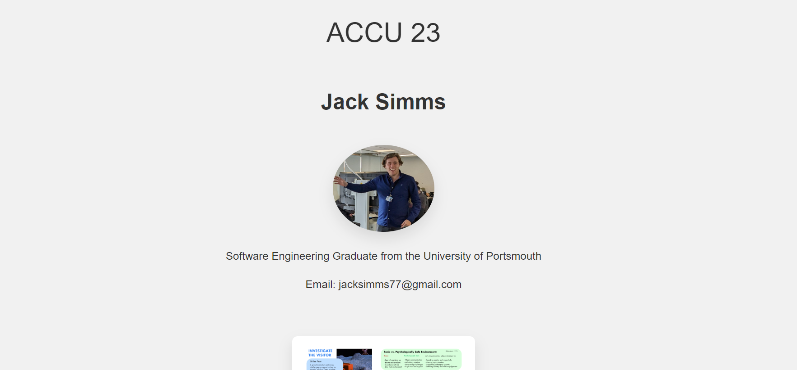

UI/UX Projects

Struggling to find a career in traditional illustration roles, I realised I needed to upskill. I had previously completed a Udemy course in basic HTML and CSS as I was interested in creating a portfolio website to display my artwork. After helping a recent graduate design a better looking and more engaging website, I discovered a passion for designing beautiful, user friendly websites and I am now actively seeking full-time roles as a UI/UX Developer to further develop my skills and gain industry lead experience in the field.
Jack Simms Software Engineering Portfolio
My first project which got me hooked into Web Design started when a recent Software Engineering graduate reached out to me, explaining he was terrible at creating good visual software and really liked my artwork showcased on my Instagram. I collabratorated with him on the design on a new portfolio site, aiming to effectively communicate his personality and skillset to employers. Through this collabration I utilised my illstutration skills in animation and started learning Figma to prototype the website, so that he could code it to the design guidelines i produced. His only requirements was that he wanted bananas to feature as he had utilised their symbolisism in his recent conference talk.
BEFORE:

AFTER:
Jack's new and improved live website in action:
New Improved WebsiteLittle Lemon Restaurant (Meta Course Project)
After the furfilling experience of helping with the design of Jack Simms's new portfolio, I decided to undertake a course to learn more about UI/UX design. I signed up for a course taught by Meta (Facebook) and achieved 100% in my coursework and 91% overall, gaining a certifcate accredited by Meta in "course name"
My coursework task was to design a mobile app for a restraunt, to which I was given a specification and requirements of design:
- Requirement 1: blah blah blah
- Requirement 2: More text here
- Requirement 3: Additional text
I successfully completed this project within the given deadline, putting the knowledge gained from the seminars into practice, increasing my confidence and ability with Figma and UI/UX concepts, including: - User Stories - Usability Testing - etc
Simply Hi Vis Clothing UK
After completing the course, I found work helping to redesign a Bournemouth manfacturer of PPE's website, I independently developed a high fidelity prototype using Figma, adhering to a customer specification whilist using my skills and understanding in UI/UX gained from my course to help improve the usability and branding of the firms web store.
The project was a success and the owners were throughly pleased with the prototype, the new web store is currently in development by an a software engineer and will functioning app soon!